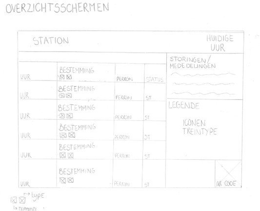
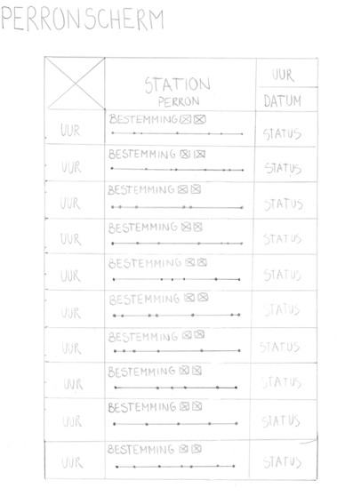
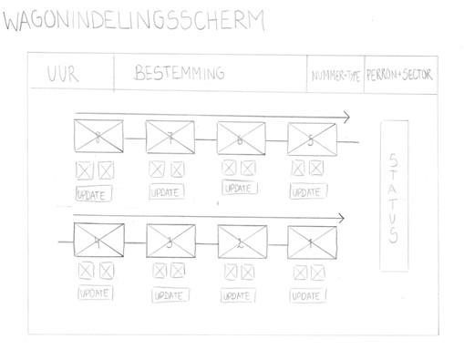

Wat zoeken reizigers met haast als eerste op de infoschermen?
- Uur van vertrek, perron, bestemming & status
- Huidige uur, uur van vertrek, perron & bestemming
(Belangrijk: het uur moet duidelijk zichtbaar zijn)
Wat zoeken toeristen die de Nederlandse taal niet kennen?
- Bestemming & perron
- Dingen die ze wel begrijpen
- Bestemming, perron & uur van vertrek
Conclusie: weinig mensen kijken naar de nummer en het type van de trein. Deze kunnen we dus redelijk klein maken op de schermen. Belangrijke informatie die zeker wel groot moet zijn zijn de bestemming, het uur van vertrek en het perron.

1. Ik heb ervoor gekozen om de uren van aankomst groot en duidelijk te maken zodat gehaaste reizigers snel kunnen zien om hoe laat hun trein vertrekt.
2. Ook het perron is groot en duidelijk, zo weet men snel waar ze naartoe moeten.
3. Het huidige uur staat ook op dit scherm. Men kan naar deze klok kijken zodat ze weten hoeveel tijd ze nog exact hebben tot hun trein aankomt.
4. Ik heb gekozen voor symbolen voor de types van de treinen om te veel tekst te vermijden op het scherm. De legende van deze symbolen staat aan de rechterkant van het scherm zodat men weet welk symbool voor welke trein staat.

1. Ook op deze schermen staat het uur groot en duidelijk zodat het goed en snel leesbaar is.
2. Aan de bovenkant van het scherm staat het station en het perron waarop ze zich bevinden.
3. Ik heb ervoor gekozen om de volgende bestemmingen te tonen op een soort tijdlijn met stippen voor de volgende bestemming. Zo weten de reizigers hoeveel haltes ze moeten doen voor ze op hun bestemming zijn.
4. De status van de treinen staat rechts van het scherm. Deze zullen aangeven hoeveel minuten vertraging de trein heeft, of de trein op tijd is of als een trein geannuleerd wordt.

1. Op dit scherm zien we elke wagon en de rijrichting van de trein centraal op het scherm staan.
2. Bovenaan staat steeds de volgende bestemming van de trein, hierdoor weten reizigers of ze nog kunnen blijven zitten of dat ze bij het volgende station moeten afstappen.
3. Ik heb ervoor gekozen om de status van de trein aan de rechterkant verticaal te zetten om plaats te besparen op het scherm.
4. Elke wagon heeft een vak gekregen waarin real-time updates komen te staan over de wagon.
5. De twee vakjes onder het elke wagon zijn voorbehouden voor de klasse van de wagon en de symbolen voor fietsen, rolstoelen, etc.